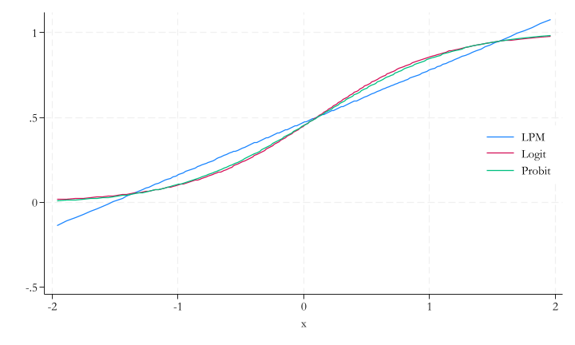

What are the health benefits of not smoking? Considering the 50+ population, we can investigate if differences in smoking habits are correlated with differences in health status.
good health vs bad health
Binary events
Some outcomes are things that either happen or don’t happen, which can be captured by binary variables
e.g. a person is healthy or not, a person is employed or not, a person is a smoker or not. We dont see a person that is half healthy, half employed, or half a smoker.
How can we model these events?
We have seen this before. Instead of modeling the value itself, we model the probability of the event happening.
\[E[y] = P[y = 1]\]
In fact, the average of a 0–1 event is the probability of that event happening. Which can also be estimated as conditional probabilities:
\[E[y|x_1, x_2, ...] = P[y = 1|x_1, x_2, ...]\]
Good news, we can use the same tools we have been using to model these probabilities.
Modelling events: LPM
LPM: Linear probability model
Linear Probability Model (LPM) is a linear regression with a binary dependent variable
It has the goal of modeling the probability of an event happening
A linear regressions with binary dependent variables shows:
differences in expected \(y\) by \(x\), represent diferences in probability of \(y = 1\) by \(x\).
Linear probability model (LPM) regression is \(y^P = \beta_0 + \beta_1 x_1 + \beta_2 x_2\)
LPM: Interpretation
\[y^P = \beta_0 + \beta_1 x_1 + \beta_2 x_2\]
So far nothing changes in terms of modelling or estimation. However, the interpretation of the coefficients changes.
\(y^P\) denotes the probability that the dependent variable is one, conditional on the right-hand-side variables of the model.
\(\beta_0\) shows the predicted probability of \(y\) if all \(x\) are zero.
\(\beta_1\) shows the difference in the probability that \(y = 1\) for observations that are different in \(x_1\) but are the same in terms of \(x_2\). (ceteris paribus)
LPM: Modelling
Linear probability model (LPM) can be estimated using OLS. (just like linear regression)
We can use all transformations in \(x\), that we used before:
Log, Polinomials, Splines, dummies, interactions, etc. They all work.
All formulae and interpretations for standard errors, confidence intervals, hypotheses and p-values of tests are the same.
IMPORTANT Heteroskedasticity robust error are essential in this case!
By construction LPMs are heteroskedastic!
And ignoring this fact will lead to biased standard errors and confidence intervals.
LPM: Prediction
Predicted values - \(\hat{y}_P\) - may be problematic. Although they are calculated the same way, they need to be interpreted as probabilities.
Predicted values need to be between 0 and 1 because they are probabilities
But in LPM, predictions may be below 0 and above 1. No formal bounds in the model.
more likely than certain, less likely than impossible
LPM: Prediction
When to get worried?:
With continuous variables that can take any value (GDP, Population, sales, etc), this could be a serious issue (extrapolation)
We need to check if predictions are within the 0-1 range at least “in-sample”. But, this is not a guarantee that it will be the case “out-of-sample”.
With binary variables, no problem (‘saturated models’) (interpolation)
Not problem because “simple” means will always be between 0 and 1.
So, a problem if goal is prediction!
Not a big issue for inference → uncover patterns of association.
But it may give biased estimates…(in theory)
CS: Does smoking pose a health risk?
This is on of the few datasets from the book that is not directly available from their website. If interested, you need to go over the repository, and follow the instructions to access the data.
Thus, we will use a different dataset to illustrate the concepts.
CS: Does smoking during pregnancy affect birth weight?
The question is whether, and by how much, smoking during pregnancy affects the likelihood that a baby is born with low birth weight.
We will use “lbw” dataset from Stata’s example datasets.
The dataset contains information on 189 observations of mothers and their newborns.
low is a binary variable indicating whether the baby was born with low birth weight (<2500gr <5.5lbs).
smoke is a binary variable indicating whether the mother smoked during pregnancy.
Data
\(low = 1\) if baby was born with low birth weight
\(low = 0\) if baby was born with normal weight -Some demographic information on all individual
We exclude women <15 years old and >40 years old
Also exclude women with Weight > 200lbs (before pregnancy)
LPM: in Stata
Start with a simple univariate model: \(P[low|smoke] = \alpha + \beta[smoke]\)
webuse lbw, cleardropif age < 15 | age > 40 | lwt > 200reg low smoke, robust
Looking at the composition of people: top vs bottom part of probability distribution
Look at average values of covariates for top and bottom X% of predicted probabilities!
Code
sort low_hatsetlinesize 255qui: gen flag = 1 if_n<=5qui: replace flag = 2 if_n>=_N-4list low_hat smoke age race any_premature hist_hyper no_of_visits_1tr wgt_bef_preg if flag==1list low_hat smoke age race any_premature hist_hyper no_of_visits_1tr wgt_bef_preg if flag==2
Prediction: predicted probability need to be between 0 and 1
Thus, for prediction, we must use non-linear models
Actually, its a quasi-linear model.
The model, itself, is linear in the parameters
but need to relate this to the probability of the \(y = 1\) event, using a nonlinear function that maps the linear index into a 0-1 range: ‘Link function’
where \(\Lambda()\) is called logistic function, and \(\Phi()\) is the cumulative distribution function (CDF) of the standard normal distribution.
Link functions II.
Both link functions are S-shaped curves bounded between 0 and 1.
There is but a small difference between the two.
but estimated coefficients will be different.
Code
qui {clearrangep 0 1 202dropifp==0 | p==1 gen x = invnormal(p)geny = (x+rnormal())>0regy xpredict y_1logity xpredict y_2probity xpredict y_3dropifabs(x)>2two (line y_1 x ) (line y_2 x) (line y_3 x), ///legend(order(1 "LPM" 2 "Logit" 3 "Probit") pos(3) ring(0) col(1)) }

Logit and probit interpretation
Both the probit and the logit transform the \(\beta_0 + \beta_1 x_1 + ...\) linear combination using a link function that shows an S-shaped curve.
The slope of this curve keeps changing as we change whatever is inside, but it’s steepest when \(y^P = 0.5\) (inflection point)
The difference in \(y^P\) corresponds to changes in probabilities, between any two values of \(x\).
To find how much is related to a particular \(x\), You need to take the partial derivatives.
Important consequence: no direct interpretation of the raw coefficient values!
Thus, always know if you are interpreting the raw coefficients or the marginal differences.
Marginal differences (marginal effects)
NOTE As before, the word “effect” should be used with caution. In the book, they use “marginal differences” instead. as a more neutral term.
Link functions makes associates \(\Delta x\) into \(\Delta y_P\). we do not interpret raw coefficients! (except for direction)
Instead, transform them into ‘marginal differences’ for interpretation purposes
They are also called ‘marginal effects’ or ‘average marginal effects (AME)’ or ‘average partial effects’.
Average marginal difference has the same interpretation as the coefficient of linear probability models, but with caveats.
Marginal differences: Discrete \(x\)
if \(x\) is a categorical (0-1), the marginal difference is the difference in the predicted probability of \(y = 1\), that corresponds to a change from \(x = 0\) to \(x = 1\).
\[\Delta y^P = y^P(x = 1) - y^P(x = 0)\]
Then we simply “average” this difference across all observations.
Marginal differences: continous \(x\)
If \(x\) is continuous, the marginal difference is calculated as the derivative (for a small change in \(x\)).
The log-loss is a measured derived from the log-likelihood function. It measures how much observed data dissagrees with the predicted probabilities.
The smaller (close to zero) the log-loss, the better the model.
Practical use
There are several measured of model fit, but they often give the same ranking of models.
Do not use R-squared. Even for LPM, it has no interpretation.
If using probit vs logit: pseudo R-squared may be used to rank logit and probit models.
Use, especially for prediction: Brier score is a metric that can be computed for all models and is used in prediction.
Bias of the predictions
Post-prediction: we may be interested to study some features of our model
One specific goal: evaluating the bias of the prediction.
Probability predictions are unbiased if they are right on average = the average of predicted probabilities is equal to the actual probability of the outcome.
If the prediction is unbiased, the bias is zero.
Unless the model is really bad, unconditional bias is not a big issue.
Only Probit will be biased.
Calibration
Unbiasedness refers to the whole distribution of probability predictions.
A finer and stricter concept is calibration
A prediction is well calibrated if the actual probability of the outcome is equal to the predicted probability for each and every value of the predicted probability. \[E(y|y^P) = y^P\]
‘Calibration curve’ is used to show this.
A model may be unbiased (right on average) but not well calibrated
underestimate high probability events and overestimate low probability ones
Calibration curve
Horizontal axis shows the values of all predicted probabilities (\(\hat{y}_P\)).
Vertical axis shows the fraction of \(y = 1\) observations for all observations with the corresponding predicted probability.
The closer the curve is to the 45-degree line, the better the calibration.
In practice:
Create bins for predicted probabilities and make comparisons of the actual event’s probability.
Or use non-parametric methods to estimate the calibration curve.